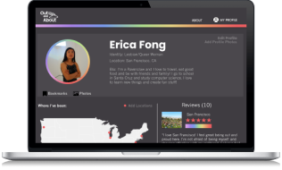
OUT AND ABOUT
Helping LGBTQ+ people find safe spaces and great places.
October - December 2018
The Problem
Out and About stems from the fear and stress that LGBTQ+ individuals experience when traveling, working or visiting a new place. Individuals and couples often fear for their safety, well being and rights in unfamiliar places. Personally, when I travel alone or with a significant other, I am very aware of how I am expressing myself and affection with my significant other. It's a constant feeling of caution, fear, anxiety and repression of my own self. The LGBTQ+ community shouldn't have to live like this.
Initial Brainstorm
Initially, I thought of solving this problem by creating a resource that contained all the laws and rights that LGBTQ+ people have (and don't have) in a certain place. I thought that this would be a useful tool for LGBTQ+ people to use when traveling and to see the disparities in justice that exist within each country and around the world. I imagined an interactive data vizualization such as a map and the ability to search for a specific location.
... but then I started to do user research
Interviews + Survey
While my initial brainstorm was a good start, it was designed by and essentially just for me. Instead, I wanted to understand how I could go about building a platform that caters to people's needs, is enjoyable and helps support a community. I wanted to understand general users' background, experiences and current resources.
I created a set of questions that touched on four general things: background, travel, technology and resources/information. In background, I asked about general demographics such as age, location, current occupation or school, and how they identify. In travel, I asked general questions about how often they traveled, reasons for travel and whom they typically travel with. I also asked some more product related questions such as concerns they have when visiting a new place, what they are worried about may happen in new places, what precautions they take when visiting a new place and their general experiences when visiting somewhere new. In technology, I was interested in knowing how they typically access information (mobile, web, both), what apps they use day to day and why, and what technology (devices, apps, websites) they typically use when traveling. Lastly, I asked about the resources, information and sources they typically accessed. I asked about what resources people typically used to learn about LGBTQ+ issues and trends to understand context about people's current intake of LGBTQ+ topics and to understand what resources have been successful in presenting this information. I also asked about where they typically stay updated on all general news/trends and how the source/writer/location affects how they consume it.
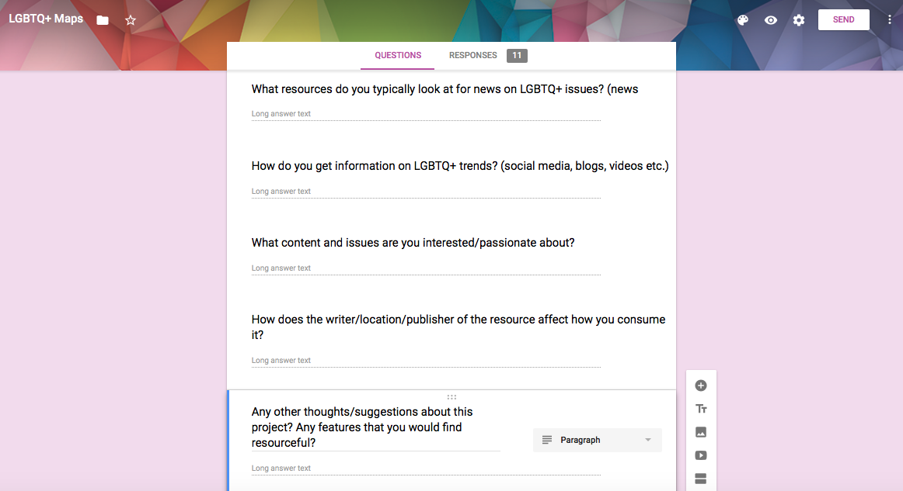
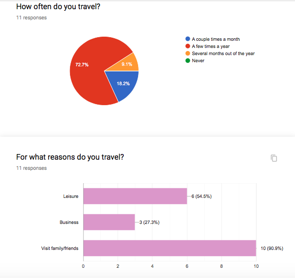
I interviewed about five people and got eleven responses on a survey, for a total of about 16 responses. I very much enjoyed doing the in person details because I was able to collect more detailed information, give the participant brief context and delve deeper into their answers with follow-up questions. However, the survey was a great way to connect with communities outside my circle of friends. I tried to interview and survey those who I believed would be most likely to use the platform, such as those in the LGBTQ+ community. However, next time I would like to collect an even wider range of input by trying to reach out to people of different age groups, those not in school and people located all over the world.
Affinity Mapping
After collecting this information and research about users, we realized that we already had a lot of different data points to work with. Even though we only got around 20 people's input, all the questions and unique points in people's answers amounted to a lot of data.
I decided to use affinity mapping to organize and analyze the data. The first goal I had with affinity mapping was just to organize the data into various categories and notice particular trends. I tried hard to not group things prematurely by question or obvious categories like positive and negative, but tried to find the unique groupings that would really help me understand the data and users.
My mentor Jenna and I both created individual affinity maps, then came together to see the different ways we grouped data and where we had similarities and differences. Most of our groups were pretty similar, however we were able to join together several ideas to make stronger connections. I used the tool MURAL to create my affinity map. First, I put each interview/survey question answer onto a virtual post it note and then began to compare post its with each other to detrmine relationships and trends. From there, clusters of related and unrelated data points began to form.
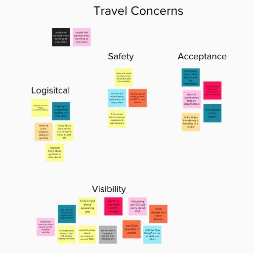
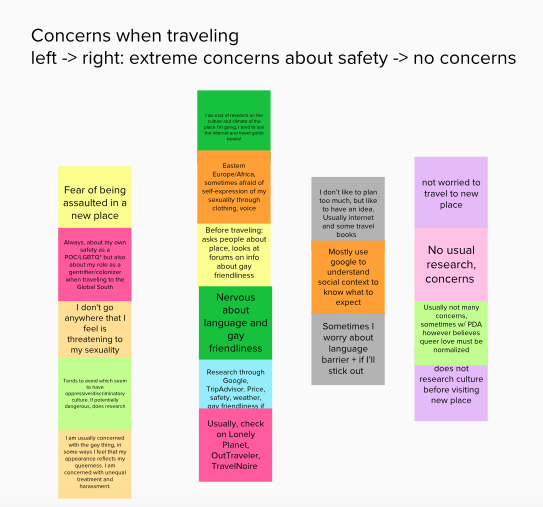
Our two groupings of travel concerns
I ended up having about 16 groups. Some groups, such as demographic
and background groups were easy to make, as I was just able to group together similar things
and from there see the range of each group. However, some groups were much more difficult to
put together where the relationship wasn't immediately obvious such as people's concerns when traveling.
There was a wide range of concerns, including safety, visibility, logistical and acceptance. These
subcategories arrose under the umbrella of having traveling concerns. We were able to see the diversity
of issues and compare them amongst each other, concluding that people really wanted to understand
the climate and culture around LGBTQ+ people as well as to what degree they can be out.
Our two groupings of travel concerns
Breaking down the data like this was a great learning experience, for myself as a designer and for the project! I gained lots of insight into people's background, current experiences and the way they navigate the world. I was able to find areas of opportunity, trends in our users and itterate on my initial idea into something more crafted towards users. Affinity mapping was a great way to synthesis and draw conclusions from the data we collected, to encorporate these points into our design process.
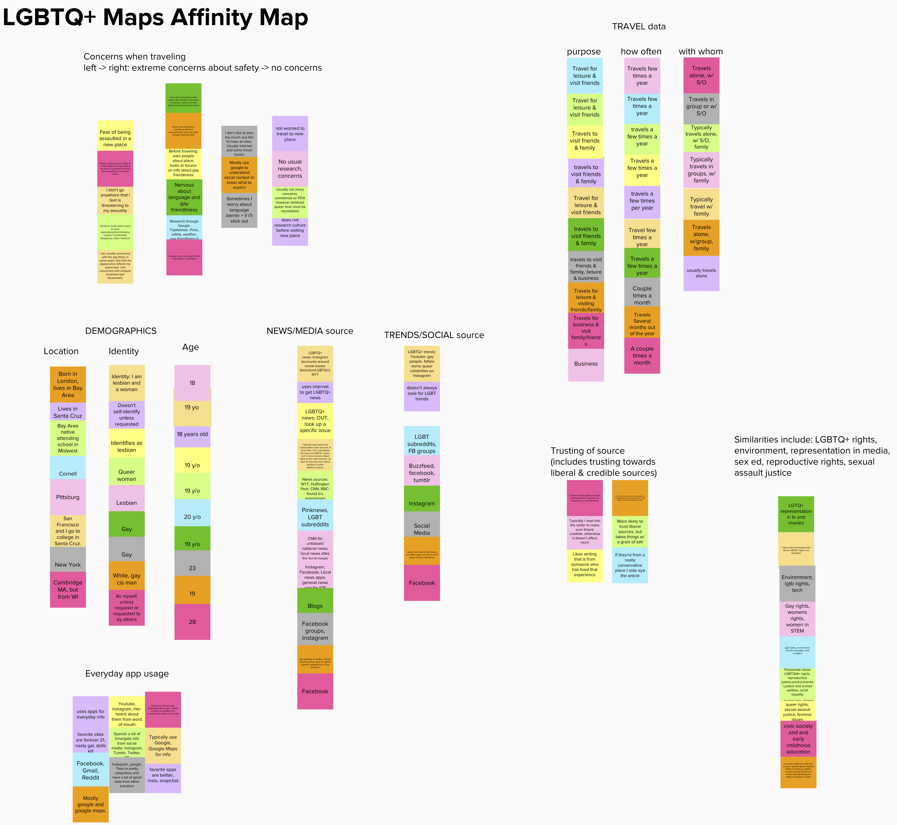
My Affinity Map
 Jenna's Affinity Map
Jenna's Affinity Map
My Affinity Map
Jenna's Affinity Map
Competitive Research
After doing user research and gaining insight into the resources they use, I decided to do some competitive research. From the user interviews, I had plenty of input about sites, apps and other resources that my users used everyday. I also wanted to understand the current market, to see what features and platforms currently exist, and where there are gaps in this market. Lastly, I wanted to view other sites to inform my design process and understand usability problems. By looking at popular sites and apps, I can get a feel for what works for them.
As I went through and analyzed different sites, I tried to make lists of what I liked and didn't liked and tried to understand the reasoning behind those thoughts. I also tried to understand who are these platform's users and why they specifically use this platform.
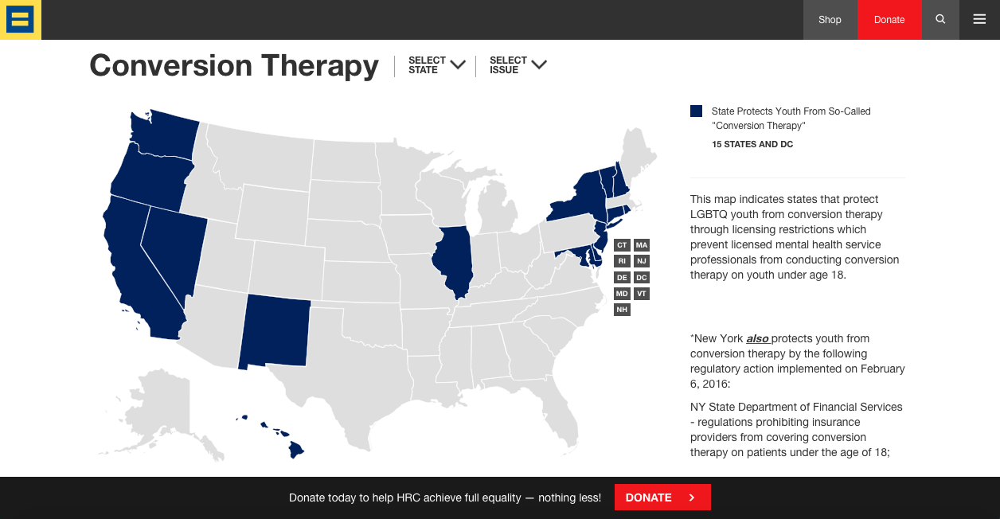
Human Rights Campaign
I started with the HRC, because it was a sight that really inspired me to create and develop this project. I have personally looked at these maps several times for data to use on school projects and to show my friends the disparity in rights there is over the US. Some things I like about this page is that you can specify issues and states and there is a historical timeline of these rights. However, I dislike that the map portion is not interactive and you can only change things with the above buttons. Most users of this site are probably looking at this as a resource to get data, or a queer person curious about their rights. I was inspired by these users, and hope to build them a resource for their needs.
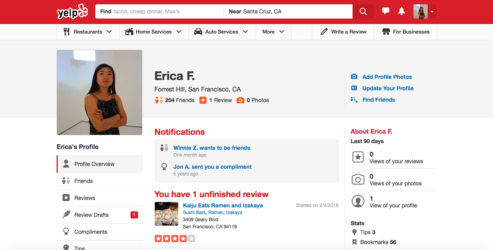
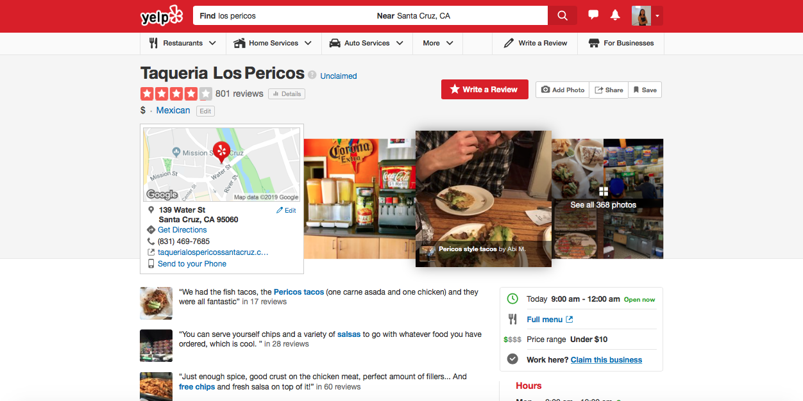
Yelp
The concept for my project was also very influenced by Yelp. Yelp is a very popular platform, so I wanted to see what features and design concepts they employed. I really like their idea of ratings and user profiles. I liked that the ratings were simple, but also included additional information such as a place's price range, ambience and pay methods. I also liked that when a user writes a review, its relatively simple, in that users can just give a rating, provide photos and say whatever they want. I adopted this design in my review form, because I wanted to have the same simplicity and freedom for the users. I also liked their user profiles, where they have their basic information and a list of all their reviews. I also followed this example when making the features of my own user profiles. A negative thought that I had about Yelp was that there may be issues in how accurate ratings are due to generation gaps, technology gaps and business practices. I figured that this may also be a problem that my site may face because similarily, it relies on contribution from users and these users may tend to be younger and have access to technology.
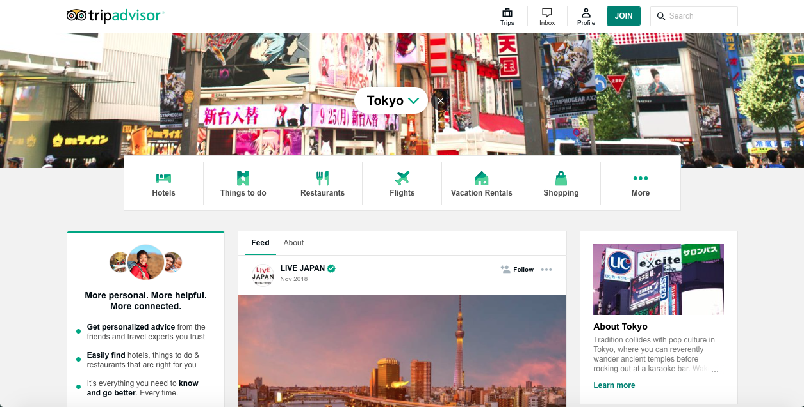
Trip Advisor
Like Yelp, Trip Advisor is also a very popular platform that users use to find new places and experiences. I also liked that each of their listings has a simple rating, where users can add images and talk about their experiences. I also like the feature they have where other users can thumbs up helpful reviews. However, the site felt a little unorganized and at times difficult to find navigate, this may be because there were so many tabs of "Housing", "Experiences", "Flights" and "Restaurants" and each page had a really different feel and lots of content. From this I realized that I wanted to work on making consistent designs and pages that had all have a similar feel.
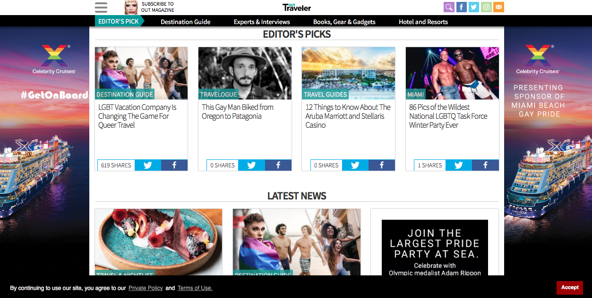
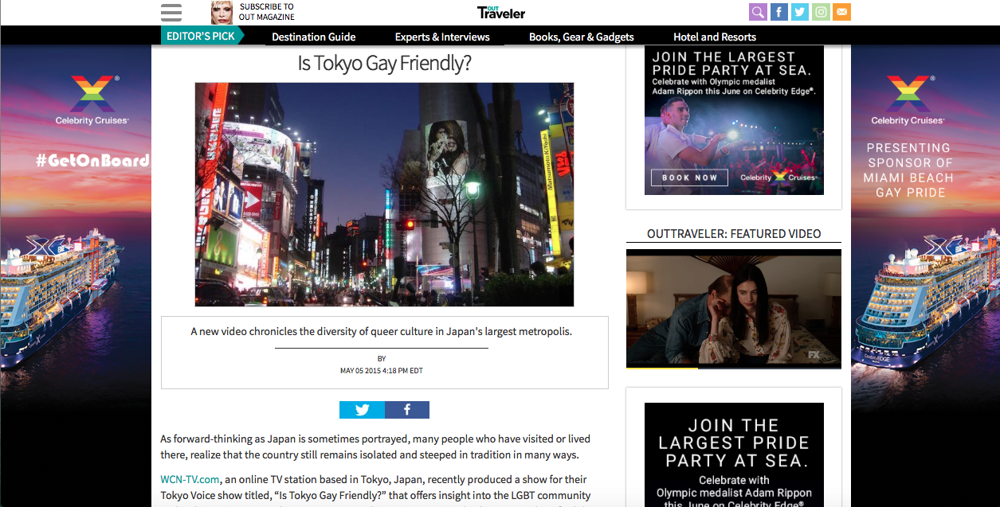
OutTraveler
I heard about OutTraveler through my user research, and was excited to see a queer specific traveling site. The concept and name sounded really familar to what I was building. I did like the different tabs of "Experts & Interviews", "Destination Guides" and "Hotels". However, when I looked more closely at the site, not all the information seemed to be LGBTQ+ related and the site had an unofficial feel to it. The articles all have no author and there wasn't a lot of info except for these articles. I didn't feel like I could trust the content on this site and therefore wouldn't frequently visit it. I realized that I wanted to craft a platform that users could trust and be inclined to return to.
If I were to do this again, I would love to personally interview users from each site to specifically ask them about what they like/dislike about a platform and to observe them using this platform to see what features and elements they are drawn to.
Conclusions and Solution
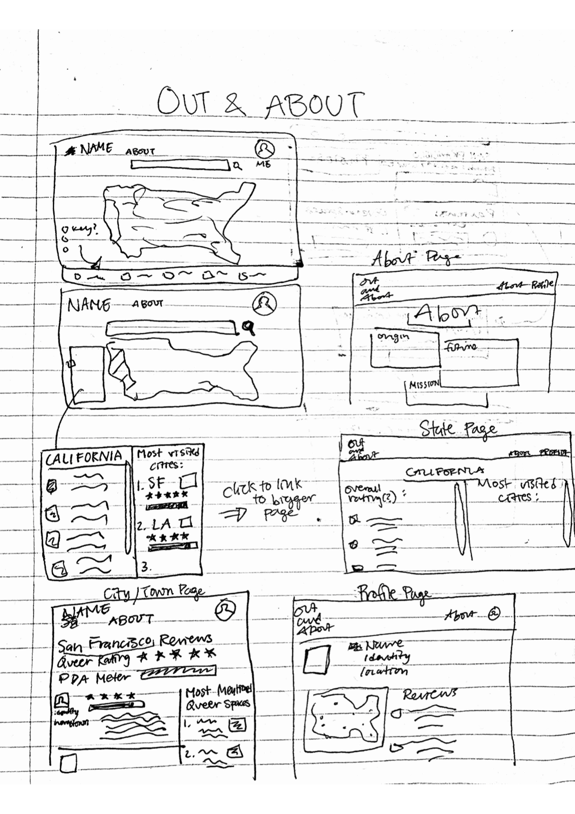
Lo-fi Sketches
Lo-fi Sketches
Conducting user research and analyzing current competition transformed my initial idea and sparked ideas for the design. From the user research I was able to develop an understanding of the values and background of my users, user needs, gaps I hadn't previously addressed and a deeper insight into what my project could mean for people. I learned that people typically travel a few times a year, most travel with other people and travel is typically to visit friends and family. I learned that though people may not always be traveling to new places, people do travel pretty often and often with their significant other. So it is important that queer couples are aware of the culture and rights in a new place. I also learned that people have fears of being assaulted, expressing their queerness and being with a significant other. These concerns about safety and expression should not be something someone needs to worry about when traveling, therefore, a site where people can get feedback and advice about a place's climate can help them plan accordingly when traveling.
However, the biggest thing I learned was about how users typically get resources, who these sources are and their willingness to trust these sources. While many users get news from widely trusted sources such as the New York Times, the second most trusted source seemed to be social media, Facebook groups, subreddits and their queer friends. When asked about how and when they trusted a source, many expressed that credible sources are those that have lived the experience and sources that tend to lean more liberally. This made me come to the conclusion that the site should feature content from its users. That is how the review section of this site was born, so that a majority of the content will be from users who have visited and want to help others.
After gaining these insights, I refocused the idea of my project to be more about finding safe spaces, ratings, advice and opinions from other queer people that have traveled. While I still wanted to include a map and information about rights/laws, reviews about places were also going to be included to help people. From this I was able to develop a solution.
Little Big Things
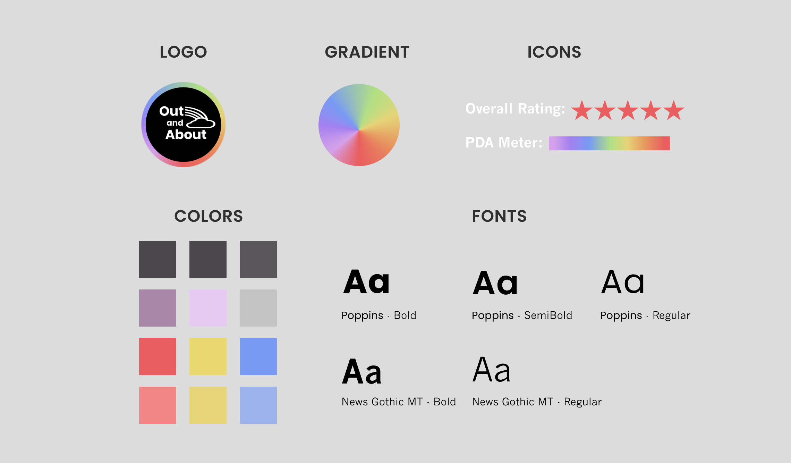
Hi-Fidelity Mockups
Interactive Map
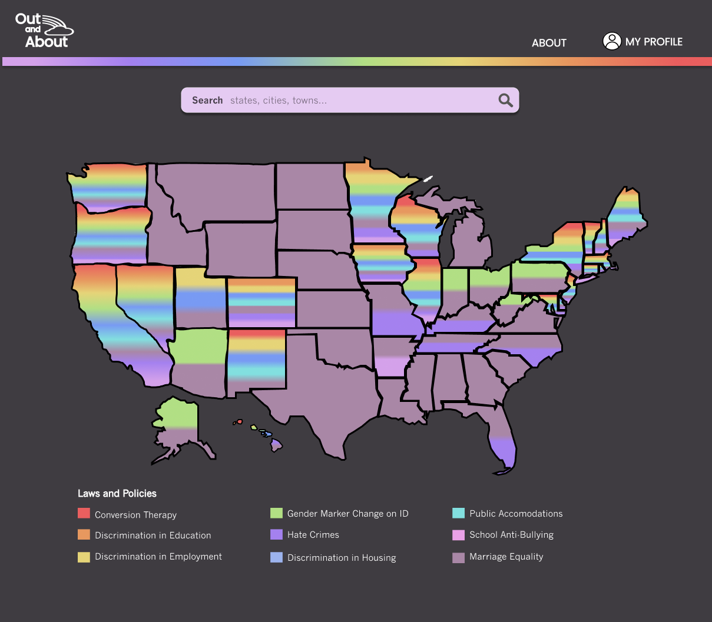
I decided to keep this part of my initial idea as the landing page. The map will initially just be
the United States, and each state will be color coded with which laws they have. This full view of
the map will allow users to really see the disparity of rights across the United States, from the states
full of color to those that only have one color (legalized marriage). Users will be able to interact
with the map. The landing page will also have a search bar where
users can search for a specific state, town or city.
State Popup
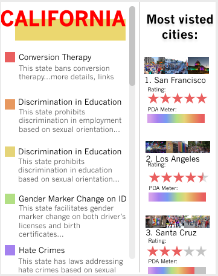
Users will be able to interact with the map. When hovering over a state,
a popup will appear of the laws that this state has and the
highly rated places in that state.
User Profiles
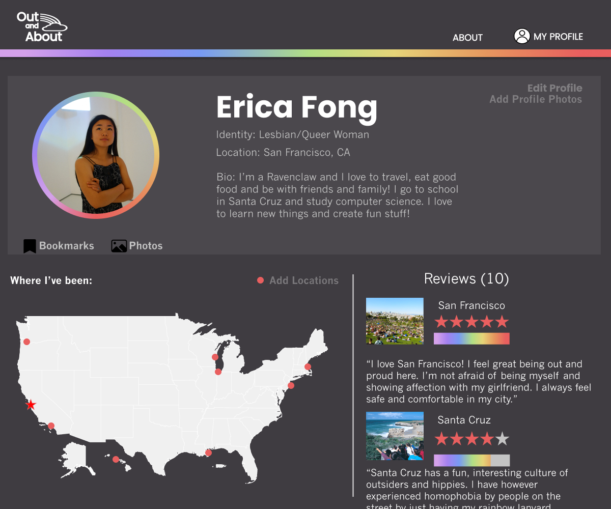
The user profiles were to have basic information about the user such as their location, identity and a bio.
A map would show where the user has traveled and there is a section that lists a history of the users'
reviews. Similarly to Yelp, there is also a Bookmarks and Photos tab where users can bookmark places
they'd like to visit and upload photos from trips.
State Pages
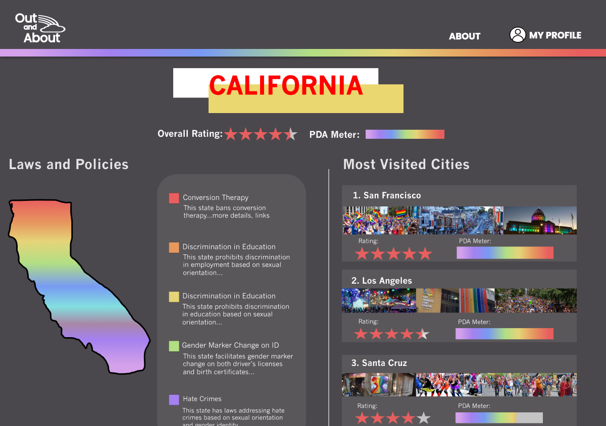
State Pages can be accessed by searching for the state, clicking on either the state on the interactive map or
clicking the header on the state's popup. Like the state's popup, it will list the laws/rights that the particular state
has and the popular cities within the state. This page also has an overall rating (out of five stars)
that is comprised of an average rating through all the individual town/city ratings. In addition to the
general rating, users will be able to fill in a PDA meter to indicate how comfortable they felt expressing PDA
in a certain area.
City/Town Pages
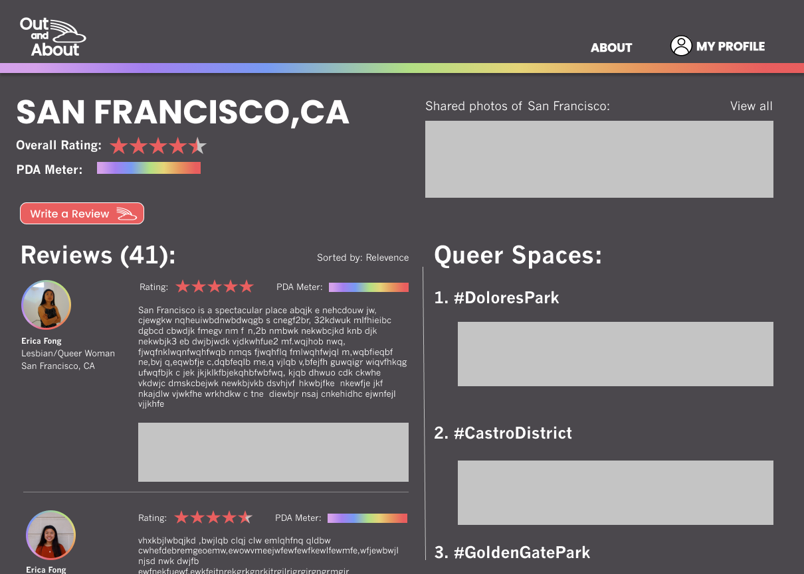
City/town pages can be navigated to by searching the specific place or finding it through a state's page. Like state pages,
this page has an overall rating and PDA meter (averaged from all individual ratings). This page has a compiled list of all
the reviews written about it, which can be sorted by relevance, date, high to low or low to high. The page
also has a section where users can view all shared photos of this location. There is also a compiled list of "Queer Spaces",
that people are able to tag in their reviews. The queer spaces are listed by most tagged places.
Write a Review
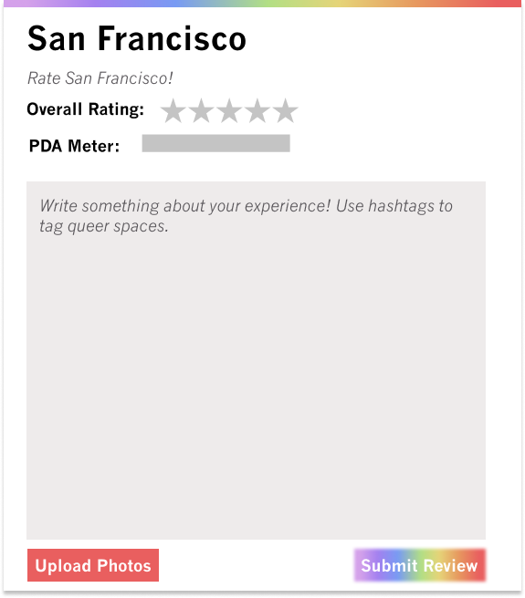
On city/town pages, there is also
a button to "Write a Review". The review form is simple, it asks for an overall rating, PDA level, has a text box and option
to upload photos.
Safe Space Pages
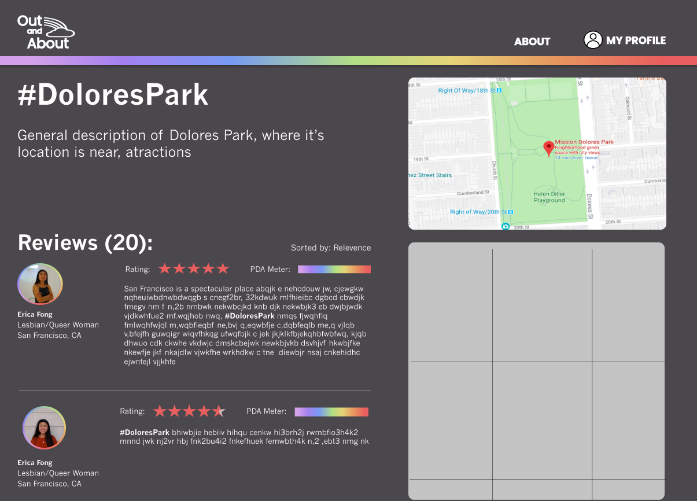
Users can reach Safe Space pages through a city/town page. This page features a safe space that has been hashtagged in user
reviews. The page gives a brief description of the place (whether its a club, park, museum etc.) and its location. There is
also a Google map that shows its location. The reviews that have tagged the space are listed along with an album of photos that
users have uploaded of the place.
Conclusion + Future
Out and About is a project very close to my heart. I loved working a project that has a goal that I am passionate about, it drives me to work harder to create something that I know can help my community. I will continue to work and fight for my community :)
Throughout this project I have had support and help from my mentor Jenna through the Out in Tech mentorship. I have loved learning about focusing my design process on users, and I will continue to practice and learn. I have also relied on many online resources, such as random posts on Medium and design tutorials to gain deeper understanding of this process.
Doing user research before designing gave me a really important understanding into the needs of my general userbase and insight into how different people may be using the product. It was important that I centered my project on the users instead of just what I personally thought would work for the project. If I were to do this again, I would love to have been able to interview more users in person to gain more detailed answers and ask follow up questions. I would have also loved to have more diverse, older people, straight people and non college students as participants! Affinity mapping was a great way to sort through and collect insights about my data. It helped to clarify patterns and grouping and find find important trends within the data. It was also helpful to gather information from competitior and similar sights to see what works to make the successful and elements I liked/didn't like. Next time, I would have liked to done more lo-fi sketches to try out more design options before doing my hi-fi mockups. Overall though, I felt that the project was a great learning experience and successful in implementing a user-centered design process.
Currently, I am working on doing user testing of the hi-fi in person. Some other future thoughts that I have for this project are to implement interactions using tools like InVision Studios and possibly develop it as a website/webapp.